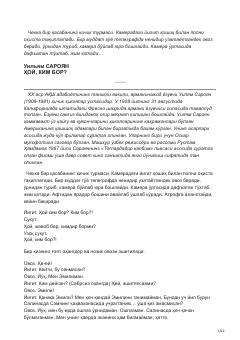

HKQamoqxona devorlari ortida boshlangan g'aroyib va ta'sirli sevgi qissasi.
Ushbu asar mashhur amerikalik yozuvchi Uilyam Saroyanning pyesasi bo'lib, unda qamoqxona sharoitida tasodifan tanishib qolgan ikki yoshning taqdiri va ruhiy kechinmalari tasvirlanadi. Asar insoniylik, yolg'izlik va umid mavzularini o'zida mujassam etgan.